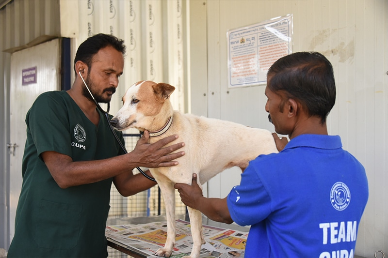

Sterilization & Vaccination
Humane population control and disease prevention are essential for the safety of stray dogs and communities.
💉 Vaccination Saves Lives
Vaccination protects stray dogs from deadly diseases like rabies and prevents the spread of infections to humans and other animals.

✂️ Sterilization Creates Balance
Humane sterilization prevents unwanted litters, reduces suffering, and ensures healthier lives for stray dogs.

Support Sterilization Programs
Your contribution helps us protect countless stray dogs.
Support the Cause